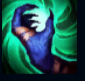
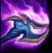
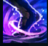
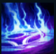
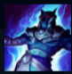

Nasus
| Nasus The Curator Of The Sand | |
|---|---|
| Release date | 01.10.2009 |
| Class | Juggernaut |
| Positions | Top |
| Resource | Mana |
| Range type | Melee |
| Adaptive type | Physical |
| Base statistics | |||
| Health | 561 – 2091 | Mana | 325.6 – 1379.6 |
| Health regen. | 9 – 24.3 |
Mana regen. | 7.44 – 15.94 |
| Armor | 34 – 93.5 | Attack damage | 67 – 126.5 |
| Magic resist. | 34 – 93.5 | Crit. damage | 175% |
| Move. speed | 350 | Attack range | 125 |
Nasus este o ființă iluminată din Shurima antică, un erou impunător, cu cap de șacal, privit ca un semizeu de oamenii deșerturilor. Fiind extrem de inteligent, Nasus era un gardian al cunoașterii și un strateg fără seamăn a cărui înțelepciune a călăuzit Shurima timp de secole. După căderea imperiului, a pornit într-un exil auto-impus și a ajuns să fie considerat o legendă. Acum că orașul antic al Shurimei s-a ridicat din nou din nisipuri, Nasus s-a întors, hotărât să nu-l mai lase să decadă niciodată. |  |
DEVORATORUL DE SUFLETE Nasus absoarbe energia spirituală a inamicului său, primind furt de viață bonus. |
||
|---|---|---|---|---|
 |
LOVITURĂ VAMPIRICĂ Nasus își lovește adversarul și îi provoacă daune. Dacă ucide ținta, puterea următoarelor ''Lovituri vampirice'' crește. |
|||
 |
EXTENUARE Nasus extenuează un campion inamic, reducându-i progresiv viteza de mișcare și de atac. |
|||
|  |
FOCUL DEMONILOR
Nasus dezlănțuie o flacără demonică într-o locație-țintă, ce provoacă daune și reduce armura inamicilor din zona respectivă. |
|||
 |
FURIA NISIPURILOR Nasus dezlănțuie o furtună de nisip puternică, care biciuiește inamicii din apropiere. Cât timp furtuna face ravagii, Nasus primește viață suplimentară, are o rază mai mare de atac, le provoacă daune inamicilor din apropiere și primește un bonus la armură și la rezistența la magie. În plus, timpul de reactivare al ''Loviturii vampirice'' e mai scurt. |